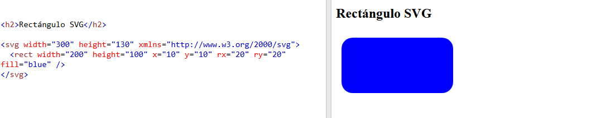
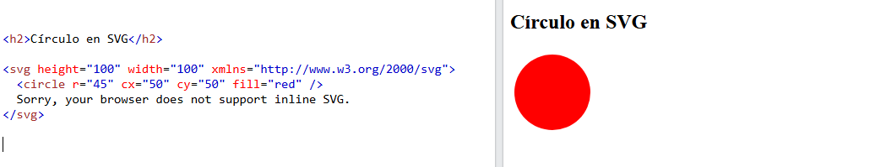
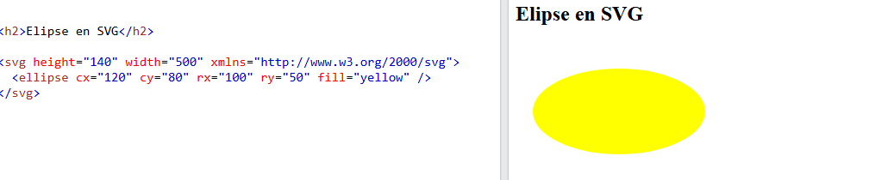
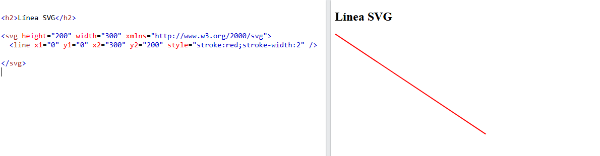

Primeros pasos en SVG
SVG viene de "Scalable Vector Graphics" (Vectores gráficos escalables), y sirve para definir gráficos con vectores en XML, con formas muy sencillas.
Podemos incluir gráficos SVG directamente en nuestras páginas HTML, empezando con la etiqueta <svg> y dentro de ella definiendo algunos parámetros
como height y width y el namespace con el atributo xmlns .
Si lo prefieres Descarga en versión PDF
Vamos a ver algunos ejemplos de etiquetas de SVG:
Rectángulos
El elemento <rect> se utiliza para crear un rectángulo y variaciones de una forma de rectángulo. Tiene seis atributos básicos para darle forma y una posición, que son:
| Atributo |
Descripción |
| Ancho |
Necesario. Define el ancho del rectángulo. |
| Alto |
Necesario. Define el alto del rectángulo. |
| X |
La posición X para la esquina superior izquierda del rectángulo. |
| Y |
La posición Y para la esquina superior izquierda del rectángulo. |
| rx |
El radio X de las esquinas del rectángulo (se utiliza para redondear las esquinas). El valor predeterminado es 0 |
| ry |
El radio Y de las esquinas del rectángulo (se utiliza para redondear las esquinas). El valor predeterminado es 0 |
Ejemplo de rectángulo con fondo azul (atributo fill ):

Volver arriba
Círculos
El elemento <circle> se utiliza para crear un círculo, y tiene 3 atributos básicos:
| Atributo |
Descripción |
| r |
Necesario. Define el radio del círculo. |
| cx |
El centro del eje x del círculo. El valor predeterminado es 0. |
| cy |
El centro del eje y del círculo. El valor predeterminado es 0. |
Ejemplo de círculo con fondo rojo (atributo fill ):

Volver arriba
Elipses
Las elipse están estrechamente relacionadas con los círculos; vienen definidos por <ellipse>. Tiene 4 atributos básicos:
| Atributo |
Descripción |
| rx |
Necesario. Define el radio x de la elipse. |
| ry |
Necesario. Define el radio y de la elipse. |
| cx |
El centro del eje x de la elipse. El valor predeterminado es 0. |
| cy |
El centro del eje y de la elipse. El valor predeterminado es 0. |
Ejemplo de elipse con fondo amarillo (atributo fill ):

Volver arriba
Líneas
La etiqueta <line> nos permite crear una línea desde el punto de inicio (x1, y1) hacia el punto final (x2, y2). Tiene cuatro atributos básicos:
| Atributo |
Descripción |
| x1 |
Necesario. Comienzo de la línea en el eje X. |
| y1 |
Necesario. Comienzo de la línea en el eje Y. |
| x2 |
Necesario. Fin de la línea en el eje X |
| y2 |
Necesario. Fin de la línea en el eje Y. |
También debe definirse el ancho de la línea y el color con un atributo (style="stroke:color;stroke-width:ancho deseado)
Ejemplo de línea roja (atributo fill ):

Volver arriba
Polígonos
La etiqueta <polygon> nos permite crear un polígono, definiendo sus puntos, que se cierran automáticamente (el último con el primero). Tiene sólo un atributo basico, points, que enumera los puntos de los que está compuesto el polígono. Cada punto debe tener una coordinada x y una coordinada y. También debe definirse el ancho de la línea y el color con un atributo (style="stroke:color;stroke-width:ancho deseado)
Veamos un ejemplo:

Volver arriba